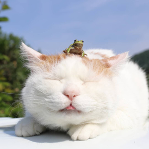

Listas
Ejercicio
Crear dos listas. Una con viñetas que contenga nombres y otra ordenada con los pasos para prepararse un mate.
Nombres
- Paulina
- Felipe
- Laura
- Augusto
- Josefina
Pasos para preparar un buen mate:
- Poner agua a calentar
- Despolivllar yerba
- Poner yerba en el mate
- Agregar un chorrito de agua y dejar hinchar
- Colocar la bombilla y disfrutar
contacto
about header
about footer
ira a pie de pagina
